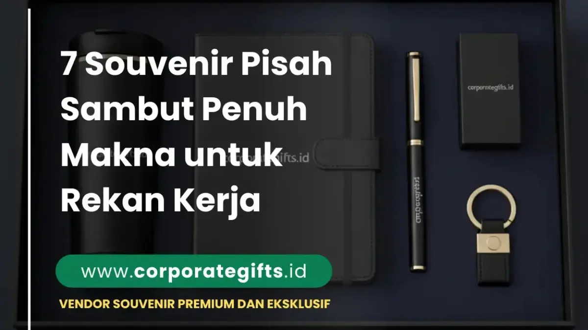

Corporate Gifts ID - Souvenir pisah sambut yang berkesan untuk rekan kerja adalah hadiah korporat fungsional dan penuh makna yang memadukan simbol penghargaan, nilai personalisasi, serta sentuhan emosional mendalam. Pilihan cinderamata seperti gift set eksekutif, plakat kristal optik, frame kolase foto tim, organizer meja kayu, tanaman mini hias, tumbler stainless steel custom, dan paket hampers tematik menjadi media terbaik untuk melepas rekan yang berpindah tugas sekaligus menyambut anggota keluarga baru di lingkungan kerja kantor.
Dalam dinamika dunia kerja modern, mutasi jabatan, pergantian tim proyek, promosi karier, hingga purnatugas (pensiun) adalah siklus alamiah yang pasti dialami setiap organisasi. Di balik momentum seremonial tersebut, selalu tersimpan rasa haru, penghargaan atas keringat perjuangan bersama, dan jalinan memori yang berharga. Memberikan cinderamata yang tepat bukan sekadar formalitas protokoler, melainkan perwujudan apresiasi nyata atas jejak kontribusi positif yang telah ditinggalkan bagi kemajuan perusahaan.
Poin Kunci Souvenir Pisah Sambut Rekan Kerja:
- Sentuhan Personal Tinggi: Tambahan grafir nama, inisial, atau pesan hangat dari rekan tim menjadikan hadiah jauh lebih bernilai emosional.
- Keseimbangan Nilai Guna: Memilih barang yang bermanfaat nyata untuk rutinitas kerja di tempat baru, bukan sekadar pajangan pasif.
- Kesesuaian dengan Profil Penerima: Membedakan format cinderamata untuk level pimpinan direksi, manajer, maupun rekan sebaya satu divisi.
- Kualitas Kemasan Presentasi: Penggunaan gift box berpita rapi, hardbox magnetik, atau kotak kayu menambah wibawa dan prestise hadiah.
- Pengadaan Terencana: Mempersiapkan suvenir sejak awal pengumuman mutasi agar terhindar dari keterlambatan distribusi di hari-H acara.
Makna Emosional & Profesional di Balik Souvenir Pisah Sambut
Bagi seseorang yang mengakhiri masa tugas di sebuah divisi, momen perpisahan sering kali diwarnai oleh pergulatan emosi. Di satu sisi ada rasa antusias menyambut tantangan karier baru, namun di sisi lain ada keengganan berpisah dengan rekan kerja yang telah menemani suka duka kerja harian.
Sebuah cinderamata pisah sambut yang dipilih dengan ketulusan hati berfungsi sebagai jangkar memori (memory anchor). Setiap kali penerima memandang plakat penghargaan di mejanya atau menggunakan pulpen grafir pemberian rekan lamanya, mereka akan teringat kembali pada atmosfer kebersamaan, rasa saling mendukung, serta kultur positif yang pernah dibangun bersama tim kerja sebelumnya.

Inspirasi set suvenir kenang-kenangan perpisahan kantor: tumbler vakum, buku agenda kulit PU, pen signature metal, dan gantungan kunci presisi.
7 Rekomendasi Souvenir Pisah Sambut Terbaik
Berikut tujuh kurasi hadiah perpisahan dan penyambutan rekan kerja yang terbukti paling berkesan, memadukan fungsionalitas harian dan nilai estetika tinggi:
1. Gift Set Eksklusif: Simbol Apresiasi Elegan
Format gift set eksklusif VIP selalu menjadi pilihan nomor satu untuk level manajerial atau pimpinan divisi. Paket ini umumnya menggabungkan buku agenda bersampul kulit termoplastik sintetis (PU leather) dengan deboss logo halus, pulpen metal rollerball grafir laser nama pejabat, dan tumbler stainless steel tahan panas dingin.
Dikemas dalam hardbox beludru atau kotak magnetik berdesain minimalis, suvenir ini memancarkan kesan mewah yang sangat membanggakan saat diserahterimakan di atas panggung seremoni.
2. Plakat Kristal Apresiasi: Kenangan Abadi Masa Pengabdian
Bagi rekan kerja yang purnabakti (pensiun) atau telah mengabdi lebih dari satu dekade, plakat kristal optik dengan pemotongan bevel presisi adalah representasi penghormatan tertinggi. Kilau bening kristal melambangkan ketulusan dan integritas rekam jejak dedikasi penerima.
Tambahkan ukiran laser 3D logo korporat, masa bakti pengabdian (misalnya: 2015 - 2025), serta kalimat apresiasi singkat yang menyentuh hati agar plakat ini menjadi benda pajangan kebanggaan di ruang kerja pribadinya.
3. Frame Kolase Kenangan: Sentuhan Hangat Penuh Keakraban
Tidak semua hadiah perpisahan harus kaku dan formal. Untuk rekan kerja sebaya satu tim, bingkai foto kolase berisikan dokumentasi momen-momen seru (mulai dari lembur bersama, makan siang bareng, hingga liburan outing kantor) menghadirkan dampak emosional yang tiada duanya.
Sertakan ruang kosong di sekeliling bingkai untuk dibubuhi tanda tangan dan pesan tulisan tangan langsung dari seluruh anggota tim kerja. Hadiah sederhana ini sering kali menjadi suvenir paling mengharukan yang membuat penerima meneteskan air mata bahagia.
4. Aksesori Meja Kantor Premium: Praktis Menemani Karier Baru
Membekali rekan kerja dengan perlengkapan meja kerja yang elegan adalah cara terbaik untuk mendoakan kesuksesannya di pos penugasan yang baru. Pilihan seperti desk organizer kayu solid multifungsi, wireless charging stand kulit, atau tempat kartu nama logam antikarat memiliki fungsi nyata yang langsung terpakai sejak hari pertama ia bertugas di kantor barunya.
5. Tanaman Mini Custom: Simbol Pertumbuhan Berkelanjutan
Bagi lingkungan kantor yang dinamis dan berorientasi pada keberlanjutan (eco-friendly culture), tanaman hias meja seperti sukulen atau sansivera mini dalam pot keramik custom logo adalah opsi yang sangat unik. Tanaman melambangkan harapan agar karier rekan kerja terus bertumbuh subur dan mekar di mana pun ia berkarya.
6. Tumbler Stainless Steel: Gaya Hidup Sehat & Fungsional
Botol minum insulasi ganda berbahan stainless steel food grade SUS 304 kini menjadi standar perlengkapan kerja modern. Dengan teknik grafir nama penerima di satu sisi dan logo divisi di sisi lainnya, suvenir ini tidak hanya mendorong gaya hidup sehat dan pengurangan sampah plastik, tetapi juga menemani mobilitas harian penerima ke mana pun ia melangkah.
7. Hampers Tematik Custom: Kejutan Manis Berselera Tinggi
Jika Anda ingin memberikan kado yang variatif dan menyenangkan, paket hampers custom corporate berisi kurasi kopi artisan, teh herbal aromaterapi, kue kering premium bersertifikat Halal, dan mug keramik custom bisa menjadi pilihan tepat. Bingkisan ini memberikan sensasi relaksasi yang menyegarkan di masa transisi adaptasi karier barunya.
Tabel Matriks Rekomendasi Hadiah Berdasarkan Karakter Penerima
Gunakan matriks panduan berikut untuk menyesuaikan jenis cinderamata dengan profil rekan kerja yang bersangkutan:
| Pilihan Souvenir | Komponen Utama | Karakter Penerima | Kesan & Nilai Manfaat |
|---|---|---|---|
| Executive Gift Set | Agenda Kulit PU, Pen Metal, Tumbler SUS304 | Manajer, VP, Pimpinan Direksi | Mewah, prestisius, dan menunjang mobilitas profesional. |
| Plakat Kristal / Logam | Kristal Optik Bevel / Logam Etsa Kuningan | Purnabakti (Pensiun), Dedikasi 10+ Tahun | Simbol kehormatan abadi atas rekam jejak dedikasi kerja. |
| Frame Kolase Kenangan | Bingkai Kayu, Foto Momen Tim, Pesan Tulis Tangan | Rekan Satu Divisi, Mutasi Antar-Cabang | Mengharukan, sangat personal, dan mempererat silaturahmi. |
| Desk Organizer Premium | Organizer Kayu Solid, Phone Stand, Card Slot | Karyawan Promosi / Pindah Kantor Baru | Praktis, fungsional merapikan meja kerja di tempat baru. |
| Tumbler Stainless Steel | Vacuum Flask SUS 304, Grafir Laser Nama | Seluruh Anggota Tim & Acara Santai | Higienis, tahan lama, dan mendukung gaya hidup sehat. |
| Hampers Tematik Custom | Artisan Tea/Coffee, Mug Keramik, Lilin Aroma | Rekan Kerja Dekat, Mitra Bisnis Eksternal | Hangat, penuh kejutan, dan memberikan relaksasi menyenangkan. |
Tips Praktis Menyiapkan Souvenir Pisah Sambut agar Lebih Berkesan
Agar suvenir yang Anda berikan meninggalkan impresi mendalam dan tidak terlupakan, terapkan empat prinsip kurasi berikut:
- Gunakan Kemasan Eksklusif: Kotak presentasi (packaging) adalah hal pertama yang dilihat penerima. Pilihlah hardbox berpita satin elegan, box kayu berukir, atau tas jinjing berbahan kanvas tebal untuk meningkatkan daya tarik estetika.
- Sertakan Pesan Personal Tertulis: Hindari memberikan barang kosong tanpa ucapan. Sisipkan kartu ucapan berpita dengan pesan tulus dari jajaran manajemen atau coretan tangan rekan-rekan satu divisi kerja.
- Sesuaikan Warna dengan Brand Guidelines: Jika acara diadakan atas nama institusi resmi kantor, pastikan palet warna produk dan kemasan selaras dengan identitas visual perusahaan.
- Pilihlah Vendor Berpengalaman Resmi: Bekerja samalah dengan vendor yang mampu menyediakan fasilitas kustomisasi logo presisi, proses pengerjaan tepat waktu, serta garansi penggantian unit cacat.
Pertanyaan Seputar Souvenir Pisah Sambut (FAQ)
Kesimpulan dan Konsultasi Pengadaan Cinderamata
Memilih souvenir pisah sambut yang berkesan bukan tentang seberapa mahal harga barang yang dibeli, melainkan seberapa besar perhatian, ketulusan, dan rasa terima kasih yang dituangkan ke dalam hadiah tersebut. Mulai dari plakat kristal kehormatan hingga frame foto sederhana penuh kenangan, setiap cinderamata menjadi monumen pengingat atas jejak kebersamaan yang telah terukir indah.
Percayakan pengadaan souvenir perpisahan dan pisah sambut perusahaan Anda bersama tim spesialis CorporateGifts.ID. Diskusikan ide Anda sekarang juga untuk mendapatkan katalog lengkap 2026, preview mockup 3D gratis, serta penawaran harga terbaik dengan legalitas B2B resmi.